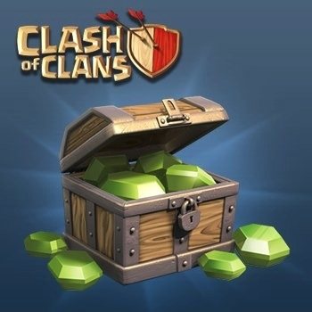
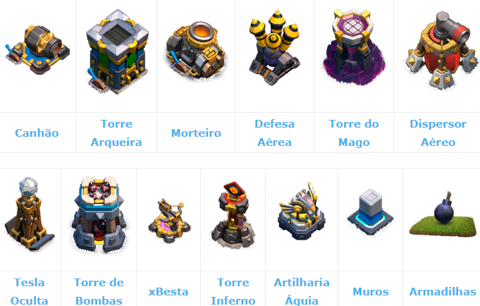
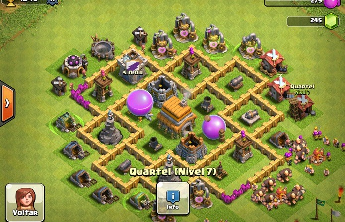
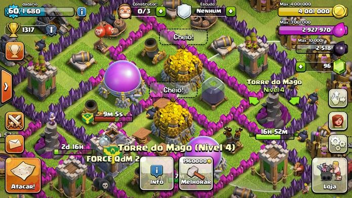
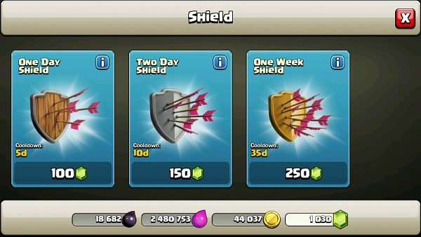
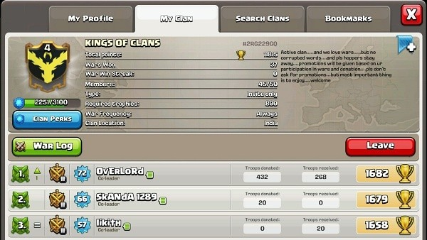

Clash of Clans é um game de estratégia gratuito para celular, onde jogadores tentam dizimar as vilas dos adversários com bárbaros, bruxos e dragões. O seu objetivo principal é manter a sua base e recursos preciosos a salvo das investidas inimigas e, para isso, é necessário tomar algumas precauções.
Confira as nossas dicas para se dar bem em Clash of Clans!
POUPE SUAS GEMAS

Em quase todos os games gratuitos, existe um prazo de tempo nas construções que vai aumentando à medida que você vai progredindo. As gemas servem para você ultrapassar esses obstáculos, porém, existem outros usos mais úteis para elas, como comprar Construtores.
Ganhe conquistas e limpe obstáculos naturais para acumular gemas e guarde-as para investir no mais importante.
APOSTE NAS DEFESAS DA SUA BASE

Em Clash of Clans ter uma defesa forte é tão importante quanto ao seus ataques e níveis de tropas. A defesa de sua vila depende de muitas construções, elas salvam seus troféus e protegem seus recursos das tropas inimigas, cada defesa tem seus pontos fortes e pontos fracos, a localização de cada devesa na vila deve ser levada em conta e reflete na efetividade da defesa da vila.
Assim que você iniciar o seu game, vai ter acesso a muralhas de madeira de nível baixo. Isso significa que qualquer ataque vai destruí-las facilmente e que a sua prioridade é melhorá-las pelo menos até nível 3.
Você também deve investir ouro para melhorar as suas Torres Arqueiras, Canhões e X-Bestas para reforçar as suas defesas.
ENCONTRE A ESTRÁTEGIA DA CONSTRUÇÃO IDEAL

A estratégia básica do game é construir muralhas de forma a proteger os seus recursos mais valiosos da melhor forma possível. Para conseguir isso, você tem de assegurar que não existem espaços livres onde as tropas inimigas possam circular, mantendo os seus edifícios colados uns aos outros e protegidos por várias muralhas.
É aconselhável colocar as suas estruturas de defesa, como os Morteiros e os Canhões, perto do centro da sua vila, pois estas vão ser as bases da sua proteção. Alguns jogadores deixam edifícios de baixo nível relativos aos recursos fora das muralhas para chamar a atenção dos inimigos e salvar o mais importante que, normalmente, se encontra no centro da base.
SAIBA QUE RECURSOS ATACAR

O objetivo dos seus ataques deve ser saquear o máximo de recursos possível do oponente. Mas, para isso, você tem de saber quais recursos são o melhor alvo. Durante os ataques, existe apenas uma porcentagem pré-definida de recursos que pode ser roubada. Se o nível do seu oponente for inferior ao seu, essa quantidade será menor.
Confira o que pode obter em cada ataque:
100% do que estiver guardado no Centro de Vila;
75% do Elixir Negro nas Brocas de Elixir Negro;
50% do que estiver guardado nos Coletores de Ouro/Elixir;
20% do que estiver guardado nos Depósitos de Ouro/Elixir, até um máximo de 198,000;
5% do Elixir Negro guardado no Depósito de Elixir Negro, até um máximo de 2,000.
NÃO SUBESTIME O PODER DO ESCUDO

Sempre que você for atacado e a sua vila for destruída, você vai ficar com a proteção de um escudo durante 12 ou 16 horas dependendo dos estragos. Esse tempo em que você fica imune aos ataques é uma mais valia, pois oferece a oportunidade ideal para melhorar a sua economia, construir um exército e melhorar as suas torres sem se preocupar.
Por isso, não entre em ataques enquanto estiver sob a proteção do escudo ou vai quebrá-lo imediatamente.
JUNTE-SE A UM CLÃ

Assim que você melhorar ao máximo o seu Centro de Vila, pode começar a pensar em se juntar a um clã. Essa não só é uma boa forma de socializar, mas também de entrar em guerras e compartilhar tropas.
Você pode criar o seu próprio clã ou então se juntar a um já existente. De qualquer forma, as vantagens são muitas, desde que você esteja aberto a ajudar os seus aliados, contribuindo com tropas.